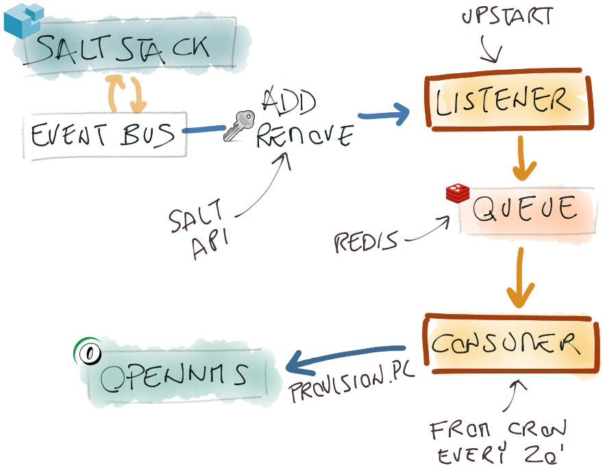
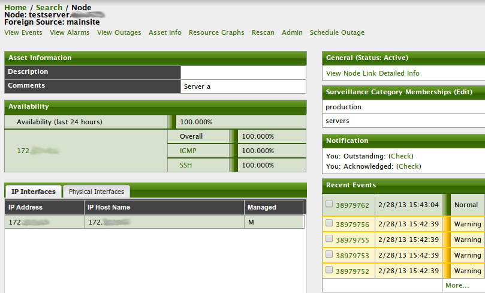

Scenario:
- OpenNMS
- Salt Stack
- VMware vSphere
- a custom vm provisioning script
I have an idea!
Since all nodes are configured with Salt why not
let Salt maintain nodes in OpenNMS too?
What is Salt Stack anyway?
- Configuration management
- Remote execution
- Python
- Open Source
- Use YAML files for configuration
What is Salt Stack anyway? (2)
- 0MQ based comm layer
- push model
- PKI for comm auth/encryption
- Growing fast:
- in 2012 ranked 8th on GitHub by number of contributors
Overview of our options:
- New suspect
- only as POC
- DNS importer
- first version
- Events/Reactors
- current version
Option 1: new suspect
#!/bin/bash
KEYS=`salt-key -l acc --no-color | \
grep -v "Accepted Keys"`
for k in $KEYS ; do
ip=`ping -q -c 1 -t 1 $k | grep PING | \
awk '{print $3}' | sed -e "s/[\(\)]//g"`;
/usr/share/opennms/bin/send-event.pl --interface $ip \
uei.opennms.org/internal/discovery/newSuspect;
done
add this script to crontab on salt master
New suspect: dis/advantages
- (too) simple but it works
- unaware of provisioning
- no metadata
- no decommissioning
Option 2: DNS importer
- salt generates one or more zone files
- opennms imports the zones
<requisition-def import-name="linuxservers"
import-url-resource="dns://salt/linuxservers">
<cron-schedule>0 0 0 * * ? *</cron-schedule>
</requisition-def>
DNS zone generation in Salt
@ in soa localhost. root 1 3H 15M 1W 1D
ns localhost.
{% set nets=salt['publish.publish']('*','network.interfaces') %}\
{% for n in nets %}{% set pdata=salt['publish.publish'](n,'pillar.data') %}\
{% if pdata.has_key(n) %}{% if pdata[n].has_key('zone') %}\
{% if pdata[n]['zone']=='linuxservers' %}
{{ n }} IN A {{ nets[n]['eth0']['inet'][0]['address'] }}
{% endif %}{% endif %}{% endif %}{% endfor %}
https://gist.github.com/3987451
DNS: dis/advantages
- no coding required
- provisioning aware
- still no metadata
- still no decommissioning

Option 3: Events/Reactors
- salt 0.10.5 introduced python event APIs
- listen for key add/delete
- integrate with provisioning
- 0.11.0 improves API with builtin event listening (Reactors)

Event listener service (started from inittab or upstart):
event = salt.utils.event.MasterEvent('/var/run/salt/master/')
evt_generator=event.iter_events(tag='key',full=True)
for data in evt_generator:
payload = data['data']
minion_id = payload['id']
if payload.get('act') == 'accept' and payload.get('result'):
minion_id=("%s/%s" % ('add',minion_id))
if payload.get('act') == 'delete' and payload.get('result'):
minion_id=("%s/%s" % ('delete',minion_id))
redis.rpush(salt_queue, "%s"%(minion_id))
Redis: shared queue and K/V store:
- listener pushes deleted/added minion ids to a queue
- consumer fetches ids (in order)
- consumer stores the opennms node id and requisition name
Consumer process (started from crontab every 20'):
- locks queue
- process queue
- query minions for ip and metadata
- forks provision.pl calls
- supports dry-run mode
Events: dis/advantages
- aligned with ops
- provisioning aware
- supports metadata
- supports decommissioning
- some coding required ( ~ 200 LOC )
The metadata as defined inside Salt
[root@saltmaster ~]# cat /srv/pillar/provisioning.sls
requisition: mainsite
opennms_categories: 'production,servers'
opennms_assetinfo: { comment: 'Server a' }
Tip: reuse this metadata in the motd
How it looks like in OpenNMS
The node page

META - Food for Thought
- Integrability matters
- Automation is a requirement
- Software Defined X (Infrastructure, Network) is here
- 'Let yourself go with the Flow?' Session